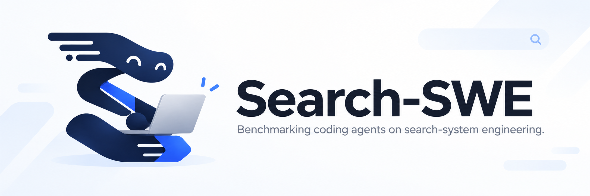

Search-SWE

Search-SWE evaluates whether coding agents can implement and optimize real search systems under fixed resource constraints.
Introduction to Search-SWE
Search is a core capability in AI agent applications, from retrieving evidence for research assistants to locating code for software agents and grounding enterprise assistants in internal knowledge. Yet building an effective search system—or improving an existing one—requires substantial engineering expertise: choices in query understanding, indexing, retrieval, and ranking must balance relevance with latency and resource use. As coding agents become part of everyday software development, a natural question arises: can they also engineer effective search systems?
We introduce Search-SWE, a benchmark for evaluating coding agents on implementing and optimizing executable search systems. Its design centers on explicit task contracts, reproducible environments with fixed inputs, and task-specific resource budgets. Agents inspect their environment, write and test code, and iterate; a separate verifier evaluates the resulting system on held-out queries, checking functionality, retrieval quality, efficiency, and compliance with task rules. This evaluates working systems rather than code alone, testing whether agents can navigate practical quality–efficiency trade-offs.
Two engineering modes
Search-SWE captures two common engineering scenarios: building a new search capability from a specification and improving an existing system. Both require executable solutions that meet task-specific interfaces and resource constraints.
- Implementation
- Build a working search capability from a task specification.
- Optimization
- Improve search quality or efficiency within fixed constraints.
Tasks
View all tasksFour representative tasks: two Implementation tasks and two Optimization tasks.
- Task 1-1 Reasoning-intensive Query Rewriting Rewrite complex biology queries to bridge the gap between query intent and relevant documents. Implementation
- Task 1-2 Memory-constrained Dense Retrieval Search 1.5M dense vectors within 2 GiB of memory while meeting accuracy and latency requirements. Implementation
- Task 2-1 Constrained Long-document Reranking Improve long-document reranking through window selection and score aggregation, with a fixed model and candidate set. Optimization
- Task 2-2 Domain-specific Embedder Fine-tuning Fine-tune a pretrained embedder for code retrieval while preserving its backbone architecture. Optimization
Contributing
Contribution guideWe welcome contributions to tasks, tools, shared environments, tests, and documentation. New tasks should be self-contained, reproducible benchmark settings—not only prompts or datasets. Start with the agent workflow and the create-searchswe-task skill for authoring and validation.
- Start one task per PRUse
task-submissions/<first-name-slug>/1-xfor Implementation or2-xfor Optimization. Use your ASCII first name, not your username; resolve active name collisions with suffixes. Maintainers assign final task IDs near merge. - Build a reproducible packageSpecify interfaces, metrics, and resource limits; isolate the verifier from the agent. Development assets may use a personal public Hugging Face dataset with documented provenance, redistribution rights, and an immutable commit pin. Never commit secrets or private evaluation assets.
- Validate and documentRun submission and release checks, unit tests, container checks, verifier positive and negative cases, and an authorized end-to-end trial. Use
--task-pathfor submission downloads and trials. Report actual results and unrun checks in the PR, and enable maintainer edits where available. - Finalize in the same PRMaintainers review and promote tasks using the
maintain-searchswe-taskskill: assign a final ID, make a pure rename commit, then a separate finalization commit. Official assets must be merged on Hugging Face and pinned before the GitHub merge. Merge commits preserve author history; unfinished submissions never enter main.
For concrete package layouts, see Task 1-1 as an Implementation example and Task 2-1 as an Optimization example.
Evaluation
To run an evaluation, follow the repository’s Quick Start : install the host tools, restore task inputs, configure credentials, and launch a task. The walkthrough runs Task 1-1 on CPU with Pi and DeepSeek Flash; Python 3.12+ and Docker are required.
Search-SWE uses Harbor to evaluate coding agents through the supported Codex CLI, Pi, and Claude Code launchers in isolated environments. Agents develop solutions using supplied data and public checks. Submissions are then tested on held-out queries, with task-specific correctness, resource, and integrity checks determining whether their search-quality scores are valid.
| Dimension | What is checked |
|---|---|
| Build & function | Reproducible execution, valid inputs and outputs, and functional correctness. |
| Search quality | Retrieval performance on held-out queries using task-specific metrics. |
| Resource limits | Task-specific time, CPU/GPU, memory, storage, and network constraints. |
| Evaluation integrity | Integrity and jailbreak checks for attempts to bypass task rules or manipulate evaluation. |
Results. The leaderboard is being prepared.